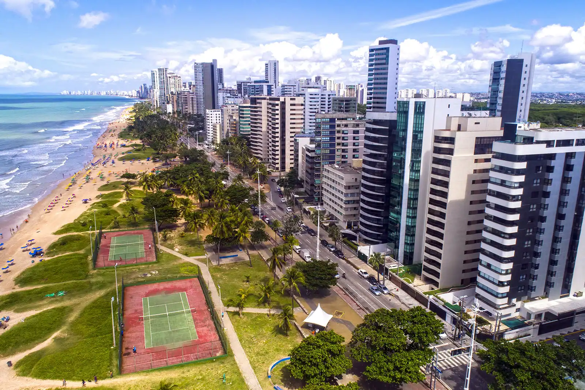

1 - Marco Zero
Visite um símbolo do nascimento da cidade

O Marco Zero foi onde a cidade literalmente começou. Localizado na Praça Rio Branco, é lá que se encontra o ponto inicial para a contagem das distâncias da cidade.
Dali, além de prédios históricos e da movimentação cotidiana da capital, turistas e moradores podem aproveitar toda a infraestrutura da região, com bares, restaurantes, museus e centro culturais. De segunda a segunda, há sempre gente movimentando o local em qualquer hora do dia e da noite. Um passeio completo e muito diversificado.
2 - Capela Dourada

Uma das igrejas mais bonitas da capital, a Capela Dourada guarda muito da ostentação e da riqueza do Brasil colonial, com muitos detalhes em ouro, madeiras trabalhadas e pinturas sacras. Na verdade, a capela fica dentro do Convento e da Igreja de Santo Antônio, onde também está o Museu de Arte Sacra.
Perto dali, não deixe de conhecer o Convento de São Francisco, que compõe um belo conjunto arquitetônico com a Igreja de Nossa Senhora das Neves, a Capela de Santana e a Capela de São Roque.
3 - Oficina de Cerâmica Francisco Brennand

Um passeio altamente recomendado é uma visita até a Oficina de Cerâmica Francisco Brennand, que pertence ao próprio artista. O local foi transformado por ele em um museu a céu aberto, tem espaços para a exposição de suas obras e é a oficina de produção de uma das melhores cerâmicas do país.
Ainda com a chancela da família Brennand, o Instituto Ricardo Brennand é outra excelente alternativa para visitantes de todas as idades que apreciam arte, arquitetura e história. O acervo inclui exposições permanentes e temporárias de artistas nacionais e internacionais e um arsenal de armas, armaduras, tapetes e quadros da era medieval.
4 - Forte da Cinco Pontas

O Forte das Cinco Pontas representa a última construção dos holandeses na cidade, com o objetivo de protegê-la de possíveis ataques e também para auxiliar na rede de distribuição de água. É um misto de cultura e história em um único roteiro.
No lugar, ainda funciona o Museu da Cidade, com exposições temporárias que abordam a história da capital pernambucana. Além disso, é muito comum anunciarem programações temporárias com eventos e exposições aleatórias. Logo, uma dica antes de visitar: busque informações atualizadas no site oficial do museu.
5 - Praia de Boa Viagem
A Praia de Boa Viagem é a mais famosa da cidade, sempre muito movimentada e frequentada por locais e turistas. O lugar oferece uma boa infraestrutura e conta com uma extensa faixa de areia, bem convidativa para a prática de esportes.
Por ter arrecifes, o mar aqui costuma ser calmo e com poucas ondas. Uma continuação da Praia de Boa Viagem, a Praia do Pina também é bastante frequentada por locais. Com águas mornas, verdes e muitos coqueiros ao redor, Pina é interessante para fugir do burburinho de Boa Viagem.